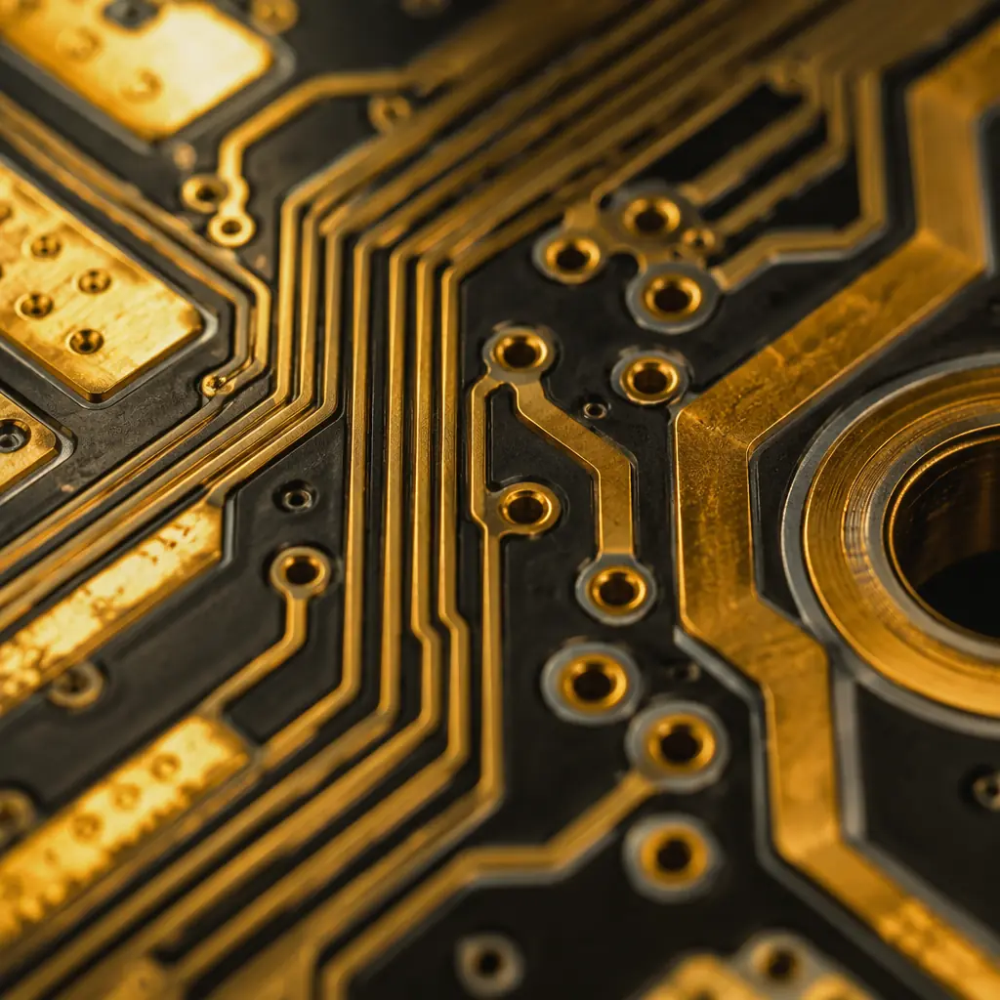
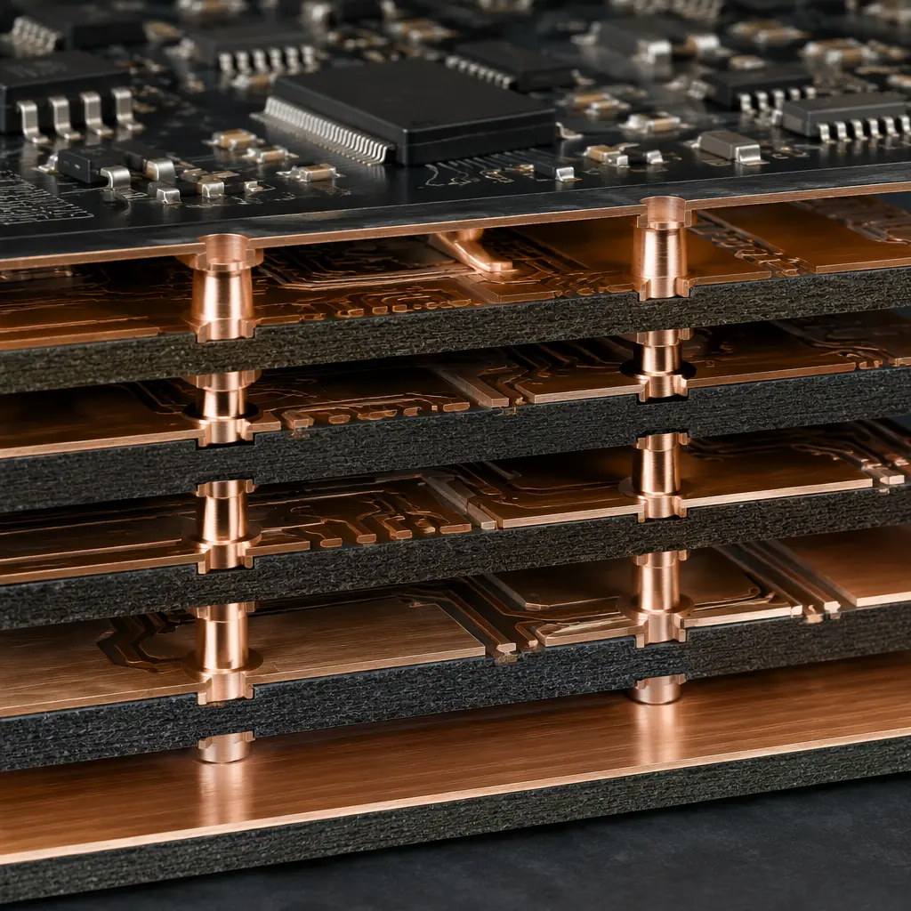
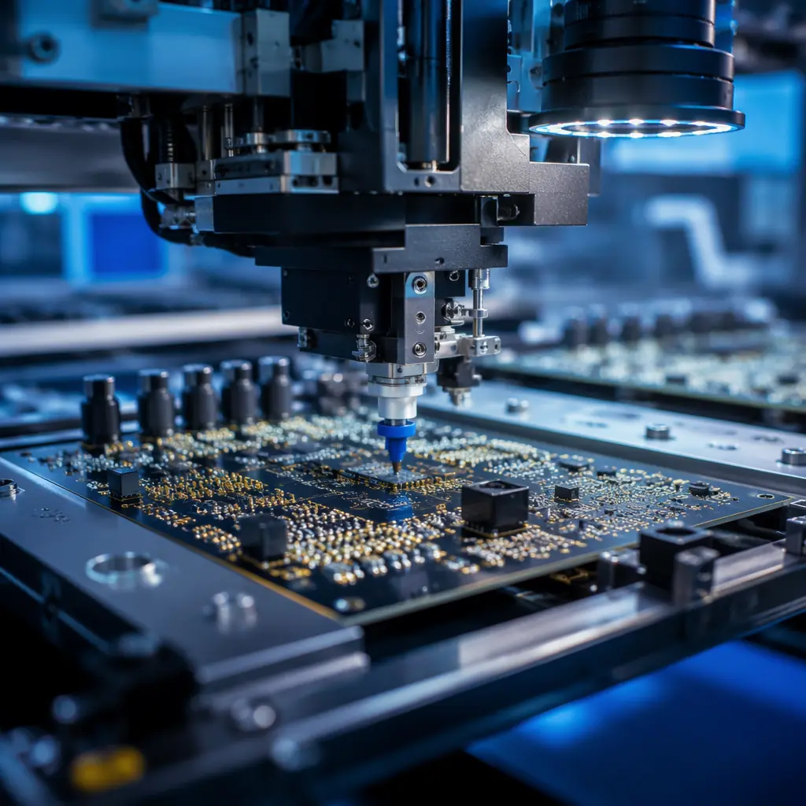

Audio engineers obsess over DAC chips, op-amp selection, and capacitor dielectric materials. The PCB — the substrate that physically connects all of those components — gets far less attention than it deserves. Yet the PCB is not a neutral platform. Its dielectric properties, copper surface roughness, ground plane impedance, and even the solder mask material all contribute measurable effects on audio performance: noise floor, channel separation, harmonic distortion, and phase linearity.
Our Shenzhen facility manufactures PCBs for professional audio brands producing DACs, headphone amplifiers, studio monitor electronics, instrument preamplifiers, and high-end home audio equipment. We have learned that audio PCB manufacturing is not about exotic materials — it is about deliberate choices at each manufacturing step, backed by measurement rather than marketing. Here are those choices and their measured impact.
What this guide covers vs what it does not: This is about the PCB manufacturing and assembly decisions that affect audio signal integrity — substrate selection, copper quality, ground plane design rules, gold plating options, and assembly cleanliness. It is not about circuit design (gain staging, filter topology, feedback network design). Good circuit design on a noisy, lossy PCB will sound worse than adequate circuit design on a properly manufactured board. Both matter — and the PCB side is what procurement can directly control through supplier specification.

Substrate Selection: Why the Laminate Affects Audio
Standard FR-4 has a dielectric constant (Dk) of approximately 4.2–4.8 at 1 MHz, and a dissipation factor (Df) of 0.015–0.025. For digital signals below 100 MHz, these numbers are adequate — the signal either arrives or it does not. For audio, the concern is different: dielectric loss is frequency-dependent, and the small-but-real variation in Df across the 20 Hz–20 kHz band introduces phase nonlinearity and subtle frequency-response coloration that compounds across multiple gain stages.
Three substrate options for audio applications, in order of increasing cost:
| Substrate | Dk @ 1 MHz | Df @ 1 MHz | Tg | Cost vs FR-4 | Audio Application |
|---|---|---|---|---|---|
| Standard FR-4 | 4.2–4.8 | 0.015–0.025 | 130°C | 1× | Consumer Bluetooth speakers, basic amplification |
| High-Tg FR-4 (170°C) | 4.0–4.3 | 0.012–0.018 | 170°C | 1.2× | Mid-range DACs, headphone amps, instrument preamps |
| Rogers 4350B | 3.48 ±0.05 | 0.0037 @ 10 GHz | >280°C | 4–8× | Reference DACs, mastering consoles, RF-based wireless audio |
| PTFE (Teflon) Composites | 2.2–3.0 | 0.0009–0.002 | Varies | 10–20× | Audiophile phono stages, tube amp point-to-point replacement boards |
For most audio products, high-Tg FR-4 is the correct choice. It provides 30–40% lower dissipation factor than standard FR-4 at the same price point as a premium FR-4 grade (Shengyi S1000-2, ITEQ IT-180A, or equivalent). The Df improvement is measurable on an impedance analyzer — and the phase linearity improvement is audible in A/B testing of high-resolution audio systems with 24-bit/192 kHz signal chains where the noise floor is below -110 dB. See our laminate selection guide for the full comparison across all applications.
Rogers and PTFE substrates become relevant for two specific audio use cases: reference-grade equipment where every 0.1 dB of measured performance matters for marketing claims, and wireless audio systems operating at 2.4 GHz or UHF where RF performance and audio performance share the same PCB. For these, the controlled Dk of Rogers (tolerance ±0.05 vs ±0.5 for FR-4) provides consistent impedance across the board — and consistent impedance means consistent phase response across channels, which is critical for stereo imaging.
Copper Surface Roughness: The Overlooked Parameter
At audio frequencies, current flows primarily along the surface of copper traces — the skin effect confines current to the outer 35–70μm at 20 kHz depending on copper purity. The roughness of that copper surface directly increases AC resistance. Standard electrodeposited (ED) copper foil has an RMS roughness of 3–5μm. Reverse-treated foil (RTF) reduces this to approximately 1.5–2.5μm. Rolled annealed (RA) copper — used in flexible circuits and premium rigid boards — achieves 0.3–0.5μm RMS roughness.
The practical impact: for a 1mm-wide, 35μm-thick trace carrying an analog audio signal, switching from standard ED copper to RTF copper reduces AC resistance at 20 kHz by approximately 8–12%. This is small — but in a phono preamplifier where the signal starts at 0.3mV from a moving-coil cartridge and must be amplified 60 dB without adding noise, every microvolt of Johnson-Nyquist thermal noise from trace resistance matters.
For digital audio — I2S, S/PDIF, USB audio — copper roughness affects rise time and jitter through impedance discontinuities. The effect is measurable on an eye diagram. Whether it is audible depends on the jitter rejection of the DAC chip downstream; modern ESS Sabre and AKM Velvet Sound DACs have enough digital PLL jitter attenuation that trace-level roughness effects are below audibility thresholds. But for word-clock distribution and master clock traces in multi-board studio systems, low-roughness copper is insurance against cumulative jitter.
Practical specification: For audio PCBs, specify "RTF copper foil, 1oz (35μm), profile Rz ≤ 5μm." This adds approximately 10–15% to the bare PCB cost compared to standard ED foil and covers the audio use case adequately. RA copper is overkill for rigid audio boards unless the design includes flex or rigid-flex sections.

Ground Plane Design: Single-Point vs Split Plane vs Solid Pour
Audio ground topology is one of the most debated topics in PCB design — and one where manufacturing quality directly affects the outcome. The three main approaches are:
Single-Point (Star) Ground
All ground returns converge at a single physical point — typically the power supply ground terminal. This prevents ground loops because each circuit's ground current must return to a common point rather than finding a lower-impedance path through another circuit's ground trace. Star grounding works best in through-hole designs with discrete components, where traces can be physically routed to a single node. Its weakness: at frequencies above a few hundred kHz, trace inductance makes the "single point" electrically distant for different circuits, and the star topology degrades. For mixed-signal audio (analog + digital on one board), star grounding alone is insufficient — you need split planes.
Split Plane Ground
The analog and digital ground planes are separate copper pours, connected at exactly one point — typically under the ADC or DAC, where analog and digital domains meet. This prevents digital return currents (which are noisy, with harmonics into the hundreds of MHz) from flowing through the analog ground plane and modulating the reference voltage of sensitive analog stages. The connection point location is critical: it must be directly under the converter chip, with the shortest possible trace between the analog ground pin and the digital ground pin. A split plane with the bridge point 5 cm from the converter is worse than a single solid plane — because the loop area between the two halves becomes an antenna.
Solid Pour with Component Placement Discipline
A single unbroken ground plane on one layer, with analog components placed on one side of the board and digital components on the other. The ground plane is continuous — no splits — but the physical separation of analog and digital sections means their return currents flow in different regions of the plane and do not overlap significantly. This approach provides the lowest inductance ground for high-speed digital signals while maintaining analog signal integrity, provided the physical layout is correct. Many professional audio designs (RME, Benchmark, Merging Technologies) use this approach rather than split planes because it simplifies EMC compliance without measurable audio performance penalty.
The manufacturing contribution to ground plane performance is simple but non-negotiable: the ground plane must be a continuous copper pour without voids, cracks, or etch artifacts. A single 0.2mm gap in the ground plane — invisible to the naked eye, caused by a photoresist defect during etching — creates an inductive discontinuity that couples noise into analog circuits. This is why audio PCB suppliers should provide 100% AOI inspection of inner layers before lamination. A ground plane defect on layer 2 of an 8-layer board is invisible after lamination and will never be caught by final electrical test — but it will appear in the audio as an elevated noise floor at specific frequencies.
Gold Plating: ENIG vs Hard Gold for Audio Connectors and Traces
Audio connectors and edge contacts present a plating decision with audible consequences. ENIG (Electroless Nickel Immersion Gold) provides a flat, solderable surface with 3–5μm of nickel and 0.05–0.15μm of gold — adequate for SMD pads and general-purpose contacts. But the nickel layer between the copper and gold is ferromagnetic. At the picoamp-level currents in a moving-coil phono cartridge signal path, nickel's nonlinear magnetic permeability introduces measurable — and some engineers argue audible — distortion.
Hard gold (electrolytic gold over nickel, typically 0.75–1.5μm gold over 2–5μm nickel) provides a thicker, more wear-resistant gold surface for edge connectors, switch contacts, and relay pads. For audio, hard gold's advantage is mechanical: gold-on-gold contacts do not form oxide layers, so connector insertion cycles (hundreds or thousands over a product's life) do not degrade contact resistance. For studio patch bays and modular synthesizer formats where cables are constantly plugged and unplugged, hard gold on the PCB edge connector is not a luxury — it is a reliability requirement.
A niche but growing audio application: immersion gold directly on copper (without nickel), also called DIG (Direct Immersion Gold). This eliminates the ferromagnetic nickel layer entirely, providing a completely non-magnetic signal path. DIG plating is approximately 2–3× the cost of ENIG and is not a standard process at most PCB fabricators. It is relevant only for the most demanding audio applications — laboratory-grade measurement preamplifiers, moving-coil phono stages, and audio research equipment where every femtoamp of noise current is characterized.
Real-world guidance: For 99% of audio products, ENIG is the correct pad finish. The nickel-related distortion argument is theoretically valid at sub-nanoamp signal levels but has not been demonstrated in controlled blind listening tests at normal audio signal levels. Hard gold is the correct choice for edge connectors and contact pads in modular audio equipment. DIG is for research-grade instrumentation. If your audio product budget allows for exotic PCB finishes, spend the money first on better DAC chips, lower-noise voltage regulators, and tighter-tolerance passive components — those deliver orders of magnitude more measurable improvement than a nickel-free pad finish. See our gold plating comparison guide for the complete technical breakdown.

Assembly Cleanliness: Flux Residue and Audio Noise
After reflow soldering, PCB assemblies carry flux residue. No-clean flux residues are designed to be non-conductive and non-corrosive at normal operating temperatures and humidity. But at the impedance levels found in high-gain audio circuits — a JFET input stage with 10 MΩ input impedance, or a condenser microphone preamplifier with 1 GΩ bias resistor — even no-clean flux residue can become a leakage path. The residue absorbs ambient moisture, creating a slightly conductive film that shunts signal current to ground. The effect is an elevated noise floor with a 1/f (flicker) character — exactly the kind of noise that is most audible and objectionable in quiet passages.
The solution is post-assembly cleaning, even for no-clean flux. We recommend aqueous cleaning (DI water with saponifier) for all audio assemblies with gain above 40 dB or input impedance above 100 kΩ. The cleaning step adds approximately $0.50–1.50 per board at production volumes and is the single most cost-effective improvement for audio noise floor performance that procurement can specify. The specification on the purchase order is simple: "Post-assembly cleaning per IPC-CH-65B, ionic contamination ≤ 1.56 μg/cm² NaCl equivalent per IPC-TM-650 2.3.25, with lot test report included in shipment documentation."
For the most demanding assemblies — microphone preamplifiers, phono stages, scientific instrumentation — specify cleaning plus conformal coating to prevent post-cleaning contamination from handling and environmental exposure. The coating must be applied after cleaning; coating over flux residue permanently traps it. See our conformal coating guide for application-specific material selection and our ionic contamination testing guide for verification methods.
Component Selection: Passive Parts That Matter on the PCB
While component selection is typically the audio designer's domain, procurement teams specifying turnkey PCBA for audio products should verify that the assembly house is using the correct component grades. Three passive component parameters where substitution can degrade audio performance:
Capacitor dielectric. C0G/NP0 ceramic capacitors have essentially zero voltage coefficient (capacitance does not change with applied voltage) and zero piezoelectric effect. They are the correct choice for signal-path coupling and filter capacitors. X7R capacitors have a voltage coefficient of -25% to -80% at rated voltage — meaning a 10μF X7R capacitor in a filter network may actually be 2μF at the operating DC bias, shifting the filter corner frequency by an octave or more. X7R capacitors also exhibit piezoelectric effect: they generate a voltage when mechanically vibrated, and they vibrate when a changing voltage is applied. In audio, this manifests as microphonic pickup — the PCB itself becomes a microphone. Assembly houses unfamiliar with audio may substitute X7R for C0G to reduce BOM cost. The specification should read: "All signal-path capacitors shall be C0G/NP0 dielectric, film (polypropylene/polyphenylene sulfide), or aluminum electrolytic as per BOM. No X7R/X5R substitution permitted in audio signal path without written approval."
Resistor type. Thick-film resistors exhibit excess noise (current noise) proportional to the voltage across them. Thin-film resistors have approximately 10–20 dB lower excess noise. In a gain-setting network where a 10 kΩ thick-film resistor carries 1V of signal, the excess noise contribution is approximately -115 dBV — below audibility for line-level signals but potentially measurable and problematic in high-gain preamplifier stages where the signal is 100× smaller before amplification. The specification: "Feedback and gain-setting resistors shall be thin-film, tolerance ≤1%, temperature coefficient ≤50 ppm/°C."
Solder joint quality on analog signal paths. A marginal solder joint on a digital trace either works or does not. A marginal solder joint on an analog audio trace can create a slightly nonlinear, temperature-dependent resistance that introduces distortion — specifically, second-harmonic distortion from asymmetric contact resistance. This is not a commonly specified parameter, but it is a real failure mode that AOI and X-ray inspection catch. For audio assemblies, specify: "100% AOI inspection of all solder joints per IPC-A-610 Class 2, with additional X-ray inspection of any joint flagged by AOI for insufficient or excessive solder." Our testing methods comparison covers the inspection technologies in detail.
Multi-Board Audio Systems: Clock Distribution and Interconnect
Professional audio equipment — mixing consoles, modular synthesizers, DSP-based loudspeaker management systems — often uses multiple PCBs interconnected by ribbon cables, board-to-board connectors, or backplanes. The PCB manufacturing considerations extend beyond single-board signal integrity to inter-board signal integrity:
Impedance-controlled traces for clock and digital audio. I2S signals between a USB receiver board and a DAC board need controlled impedance (typically 50Ω single-ended or 100Ω differential) to prevent reflections that cause jitter. A 10 cm ribbon cable carrying a 24.576 MHz master clock signal without impedance matching will create reflections at both ends — the resulting jitter is measurable on the DAC output as sidebands around the fundamental frequency. See our impedance control guide for specification details.
Ground referencing between boards. When multiple audio PCBs share a chassis ground through mounting holes and standoffs, the ground potential between boards can differ by millivolts due to current flowing through the chassis. This potential difference appears as common-mode noise at the analog inputs of the receiving board. The solution is differential signaling between boards — balanced audio connections or LVDS for digital — combined with a single-point chassis ground connection. The PCB manufacturing contribution is ensuring that mounting holes are plated through and connected to the ground plane with low-impedance thermal reliefs.
Shielding cans and board-level EMI management. Audio PCBs inside metal enclosures are usually shielded from external RF interference by the enclosure itself. But digital sections on the same PCB radiate clock harmonics that couple into high-impedance analog nodes through parasitic capacitance — even across centimeters of PCB real estate. Board-level shield cans over the digital section (microcontroller, DSP, clock oscillator) attenuate this coupling by 20–40 dB. The cans require ground pads on the PCB that connect to the ground plane with a dense via fence (vias spaced at λ/20 of the highest clock harmonic — typically every 2–3mm for a 100 MHz MCU clock with harmonics to 1 GHz). We can incorporate shield can pads into the PCB design as a standard DFM enhancement — no additional tooling cost.
Procurement Checklist for Audio PCB Assembly
When you send an RFQ for audio PCB assembly, the specification should capture the decisions above in a format the supplier can quote against. Here is a checklist:
Substrate: High-Tg FR-4 (Tg ≥170°C), RTF copper foil, Df ≤0.018 @ 1 MHz
Or Rogers 4350B if the design requires controlled Dk. Specify the laminate brand and grade — Shengyi S1000-2 or ITEQ IT-180A are equivalent high-Tg options available in our standard inventory.
Inner layer inspection: 100% AOI before lamination
Critical for multi-layer audio boards where a ground plane defect on an inner layer is undetectable after lamination.
Surface finish: ENIG (immersion gold over nickel) for SMD pads; hard gold for edge connectors
If the product has edge connectors or modular interconnect — specify hard gold thickness ≥0.75μm per IPC-4552.
Post-assembly cleaning: aqueous wash, ionic contamination ≤1.56 μg/cm² NaCl equivalent
Per IPC-TM-650 2.3.25. Lot test report required. This is the highest-impact per-dollar specification for audio noise floor performance.
Component quality: C0G/NP0 for signal-path capacitors, thin-film for gain-setting resistors, no unauthorized substitution
Include a note on the BOM: "BOM substitutions require written buyer approval. Alternate parts must match dielectric type, tolerance, tempco, and voltage rating."
Inspection: 100% AOI, X-ray for BGA/QFN, ionic contamination test report per lot
Standard for our audio production line. No additional NRE for customers using our standard quality package.
Audio PCB manufacturing is not about magic materials or proprietary processes. It is about specifying the parameters that measurably affect signal integrity — substrate loss, copper roughness, ground plane continuity, surface finish, assembly cleanliness, and passive component quality — and then verifying them with inspection and test data. A supplier that can provide this data, lot by lot, is the supplier you want. For related guidance, see our signal integrity design guide and mixed-signal PCB design guide.